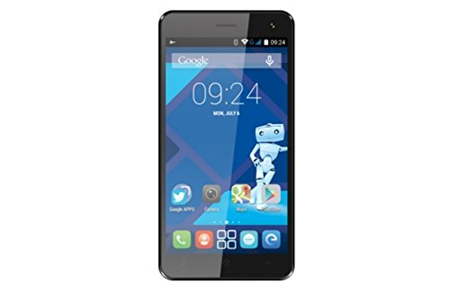
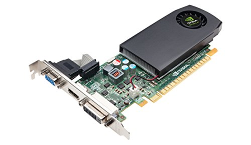
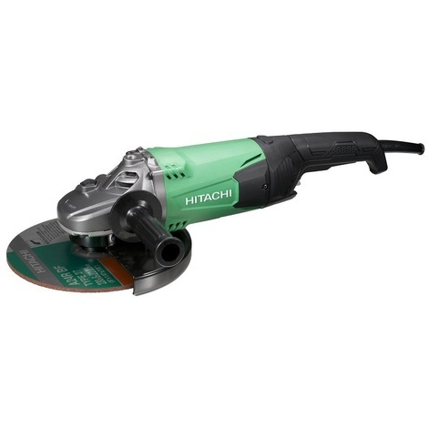

Skip to content
Électroniques
Maison
Beauté
Santé
Cuisine
Outils
Sports
Jouets
Bébés
Mode
Extérieur
Animaux
Jeux Vidéos
Livres
Rechercher :
Électroniques
Maison
Beauté
Santé
Cuisine
Outils
Sports
Jouets
Bébés
Mode
Extérieur
Animaux
Jeux Vidéos
Livres
Rechercher :
Rechercher :
Accueil
>
Électroniques
Électroniques

Haier W826 – Test et avis
Alcatel A5 Led – Test et avis
SJ4000 – Test et avis
Comparatif des 10 meilleures Tablettes 9 Pouces de 2023

Nvidia GeForce gtx 745 – Test et avis

Comparatif des 10 meilleures Meuleuses 230 mm
HP 100 501 NS – Test et avis
Comparatif des 10 meilleurs Lecteurs CD Portables de 2023
Comparatif des 10 meilleurs smartphones IP68
Comparatif des 10 meilleurs Scanners A3
Comparatif des 10 meilleurs Smartphones Seniors de 2023
Archos 101B Oxygen – Test et avis
Singer 8280 – Test et avis
Comparatif des 10 meilleurs Pianos Numeriques
Comparatif des 10 meilleures Montres Cardio Sans Ceinture
Sony DSC WX350 – Test et avis
Nikon Coolpix W100 – Test et avis
Makita MLT100 – Test et avis
Polaroid 600 Impulse – Test et avis
Canon SX60 HS – Test et avis
MSI B150 Gaming M3- Test et avis
Bosch HBG672BS1F – Test et avis
Philips DSR 3231 – Test et avis
Comparatif des 10 meilleurs Lecteurs DVD Voitures Double Ecran
Comparatif des 10 meilleurs Coffres Forts
Comparatif des 10 meilleurs Perforateurs Burineurs de 2023
Comparatif des 10 meilleurs Rabots Electriques de 2023
Bose Soundtouch 20 – Test et avis
Autel AL519 – Test et avis
Asus Zenfone 3 ZE520KL – Test et avis
Comparatif des 10 meilleurs Niveaux Laser Rotatif de 2023
Comparatif des 10 meilleures Cameras Voitures
Comparatif des 10 meilleurs Radios CD
Comparatif des 10 meilleurs Amplis Guitare de 2023
Comparatif des 10 meilleurs Decodeurs TNT Hd Enregistreurs
Comparatif des 10 meilleurs smartphones 6 pouces de 2023
Mackie CR4 – Test et avis
Comparatif des 10 meilleures tablettes 12 pouces de 2023
Comparatif des 10 meilleures Passerelles Multimedia
Comparatif des 10 meilleurs Kindles
Bose SoundTouch 10 – Test et avis
Comparatif des 10 meilleures centrales vapeur Calor
Comparatif des 10 meilleurs APN compact de 2023
Comparatif des 10 meilleurs scanners à plat de 2023
Comparatif des 10 meilleurs vaporisateurs portables de 2023
Comparatif des 10 meilleures mini chaine hifi de 2023
Comparatif des 10 meilleurs appareils photos instantanés de 2023
Comparatif des 10 meilleurs aspirateurs souffleurs broyeurs de 2023
Comparatif des 10 meilleurs Senseo
Comparatif des 10 meilleurs thermostats connectés de 2023
Comparatif des 10 meilleures tondeuses thermiques tractées
Comparatif des 10 meilleurs PC hybrides de 2023
Comparatif des 10 meilleures chaines hifi
Comparatif des 10 meilleurs camescopes
Comparatif des 10 meilleures barres de son
Comparatif des 10 meilleures tablettes 2 en 1
Galaxy A5 2016 – Test et avis
Lenovo Zuk Z1 – Test et avis
Dremel 8200 – Test et avis
Canon G9X – Test et avis
Samsung UE55MU6105 – Test et avis
Cowon X9 – Test et avis
Canon G7X – Test et avis
iRobot Braava 390T – Test et avis
Huawei Mediapad X2 – Test et avis
HTC Desire 610 – Test et avis
LG LHB625 – Test et avis
Focusrite Scarlett 2i4 – Test et avis
XDJ 700 – Test et avis
LG 49UJ630V – Test et avis
Hoover ATN264R – Test et avis
Acer X133PWH – Test et avis
Canon Pixma MX925 – Test et avis
HP Deskjet 3637 – Test et avis
Vaporetto SV205 – Test et avis
Canon Selphy CP1200 – Test et avis
Samsung HWJ355 – Test et avis
Sony DSC-H300 – Test et avis
Brother 4234D – Test et avis
Lumix TZ100 – Test et avis
Chuwi HI10 – Test et avis
Nikon Coolpix A900 – Test et avis
Acer Iconia Tab A3-A40 – Test et avis
UE55KU6000 – Test et avis
Acer Z630 – Test et avis
Lexmark CX410DE – Test et avis
Zoom H1 – Test et avis
Canon EOS 350D – Test et avis
Elephone M2 – Test et avis
Lumix GF7 – Test et avis
Tybox 137 – Test et avis
Acer G246HLBBID – Test et avis
Crosscall M1 Core – Test et avis
Olympus TG 4 – Test et avis
Pioneer DDJ SB2 – Test et avis
Sony MDR 1A – Test et avis
LG 65UF680V – Test et avis
HP Envy 5640 – Test et avis
eTrex Touch 35 – Test et avis